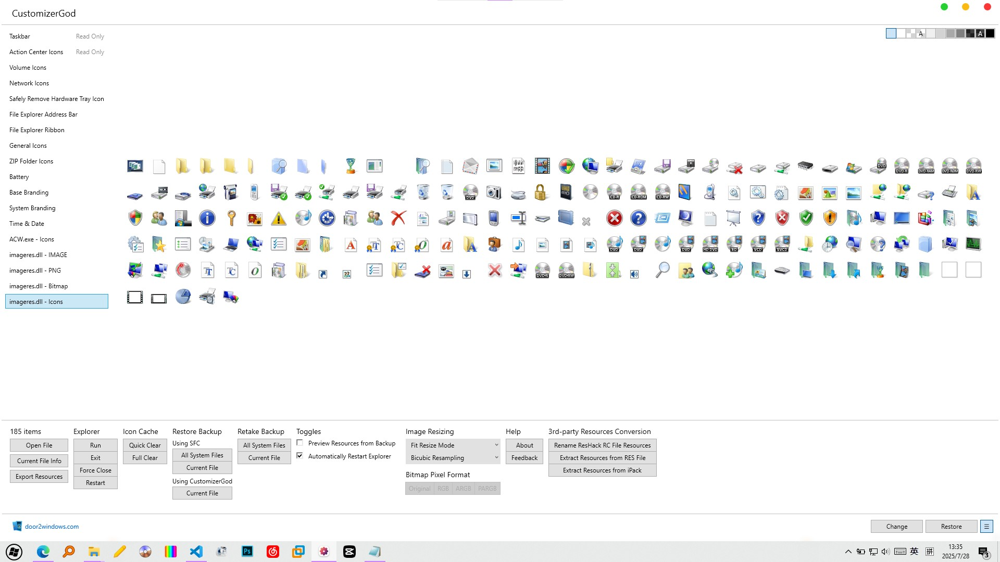
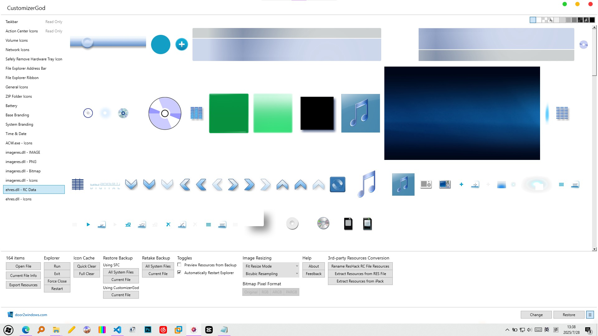
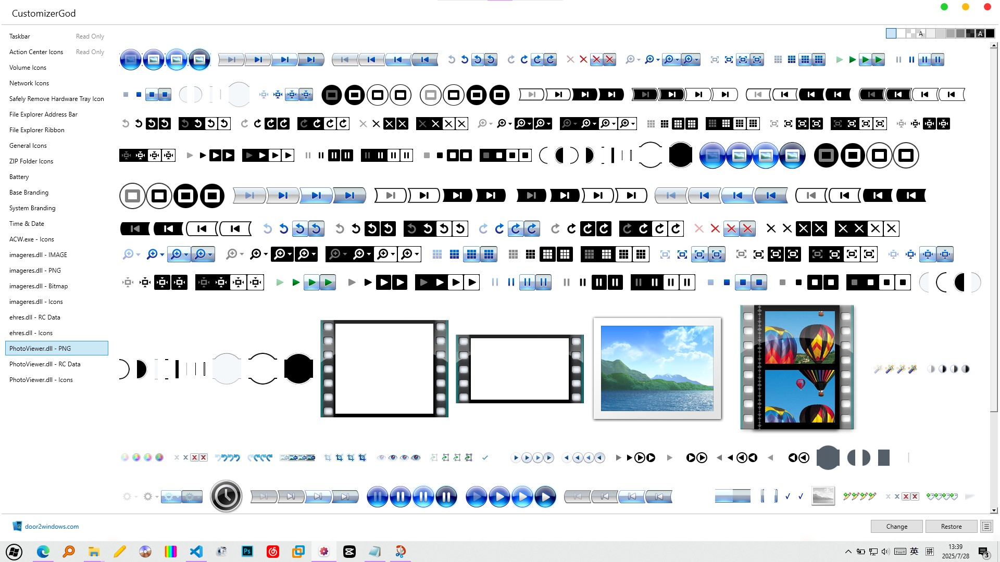
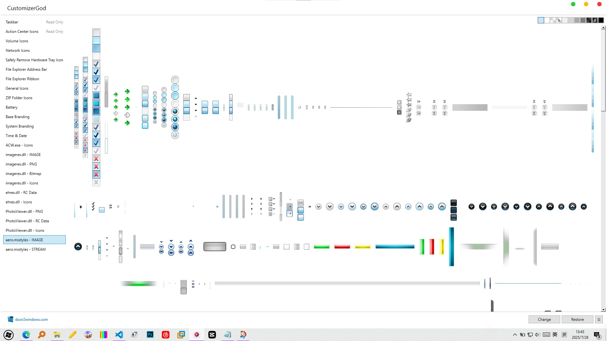
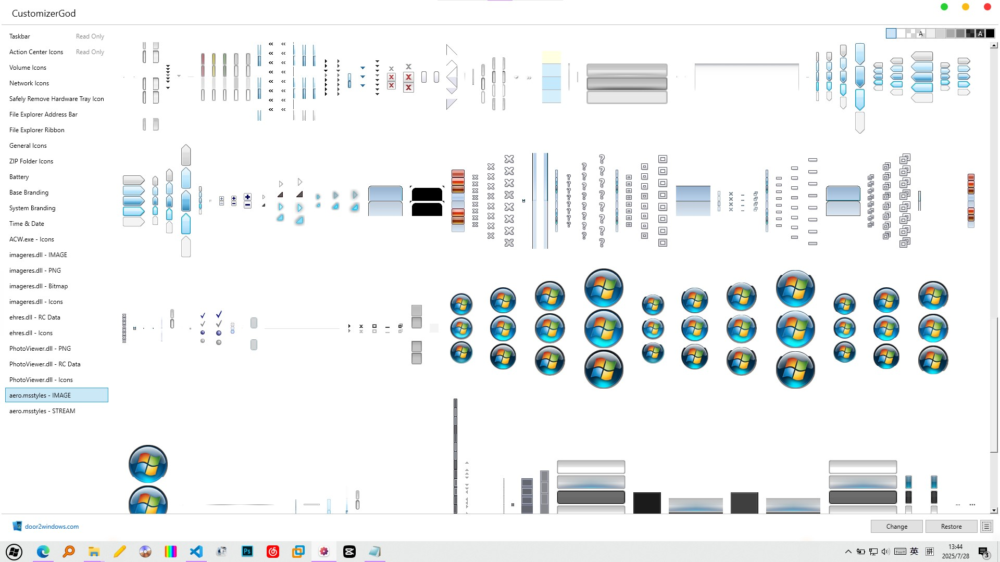
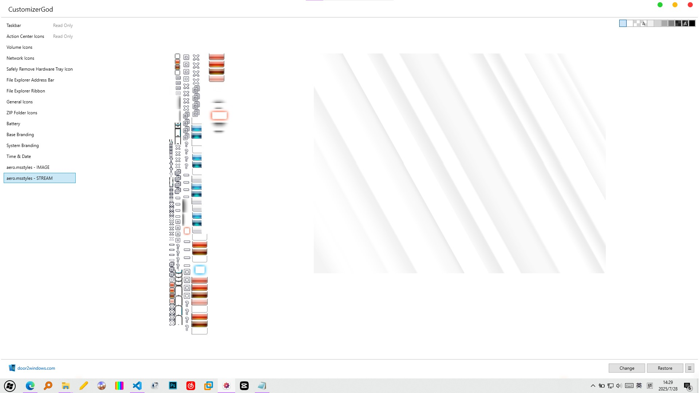

你知道吗？我们日常生活中使用的Windows，其实是个巨大的素材库，Windows中的图标、图片、声音、字体，都可以为我们所用，也许细心的小伙伴已经发现了，我这个网站就是仿照Windows Vista风格设计的，那我的素材是哪来的呢？
图标素材
shell32.dll
对于WinXP及更早系统，图标主要存在于C:\Windows\System32\shell32.dll，可以直接用ResourceHacker或CustomizerGod打开
imageres.dll
Vista以后，系统图标主要存在C:\Windows\System32\imageres.dll，shell32保留了很多旧图标，没有什么更新
对于Win10晚期版本和Win11，系统图标使用mun封装，存在于C:\Windows\SystemResources\imageres.dll，我个人还是比较喜欢这种mun封装，这意味着我们修改系统图标不必干掉整个dll，更加安全
以下是WindowsVista的imageres.dll
图片素材
Windows Media Center
Windows Media Center中有很多好看的渐变图片，存于C:\Windows\ehome\ehres.dll，这个动态链接库只存在于有Windows Media Center的版本，Win10/11不用试了
Windows Photo Gallery
Windows Photo Gallery里的按钮素材也不错，C:\Program Files\Windows Photo Gallery\PhotoViewer.dll
aero.msstyles
最后是最重要的主题素材，网站UI设计都可以从里面搬，Vista后全是PNG格式，也很方便使用。C:\Windows\Resources\Themes\Aero\aero.msstyles。大家可以仔细找找，我的网站中用了哪些元素呢
 Aero花纹也很好看
声音素材
C:\Windows\Media里全是声音，不同Windows版本有不同系统声音，这个文件夹想必大家都很熟悉，所以不多赘述。在某些特定的Windows版本中也有MP3格式的示例音乐（比如Win7的SleepAway）。此外，Windows还自带一些MIDI音乐，比如onestop.mid，大家有兴趣也可以自己找找
字体素材
C:\Windows\Fonts里自己找